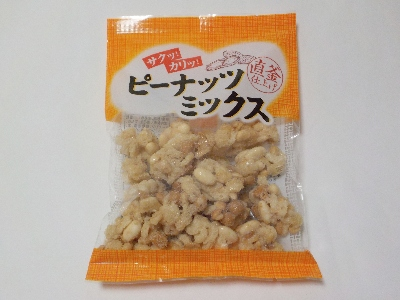
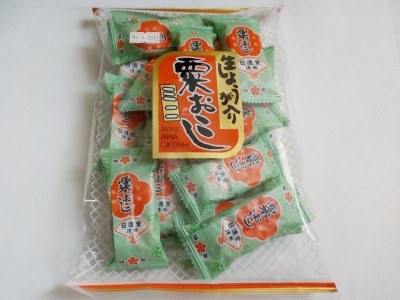
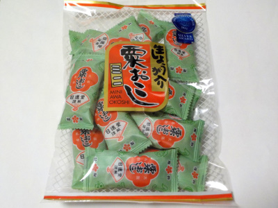
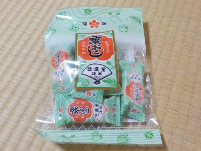

奈良県生駒群平群町上庄4-5-36
更新日 : 2024/06/23

ポン菓子だと思って買ったら違っていました。
「糖蜜でからめた、ピーナッツ・クラッカー・かりんとう・あられの4種類から生まれる食感をお楽しみください。」と書かれています。
普通に美味しかっので、十分楽しめました。
砂糖の甘味とカリカリ系の塩がよく合ってました。特に柿の種が美味しいと感じました。
更新日 : 2026/08/29

粟おこしは大阪のお土産ですね。小包装のパッケージにも大阪名物ってちゃんと書いてあります。でも作ってる会社は奈良県のようです。
これって普通にお土産じゃなくてお菓子として販売しているんですが、大阪のお土産として使ったらめちゃくちゃコスパがいいですね。
しょうがの爽やかな辛さやゴマの香ばしさが効いてて美味しいし、個包装だし、低価格で沢山配れる。大阪に行くことがあったらこれをお土産にしようって思いました。
他のメーカーも地元のお菓子には「〇〇名物」って個包装に書いて欲しいなー。
私はお土産はお土産物屋さんで買うよりも、地元のスーパーで買った方がいいんじゃないかと思っています。（時間があればですが。）
2022/06/05 甘辛だったり固かったりで刺激があるので、気分転換にピッタリです。
2022/09/04 近ごろ粟おこしがマイブームです。米と生姜とゴマでなんかヘルシーな感じしますよね。

2024/02/01 パッケージにモンドセレクションが付いて、パッケージのデザインが崩れましたね。
2024/06/13 夏も日進堂の粟おこしは生姜が効いてて爽やかでいいですね。

2026/08/29 小さくて安いパッケージです。98円でした。
【おいしいものを食べよう。】【たくさん寝よう。】
【ソロ活をしよう!】【季節感のあることをしよう。】【動画視聴はほどほどに。】【当サイトの全てのコンテンツは無断転載禁止です。】